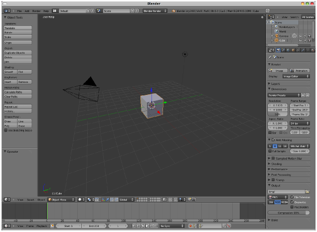
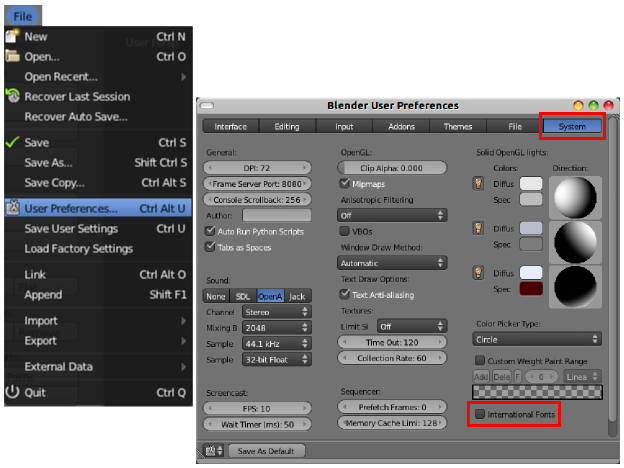
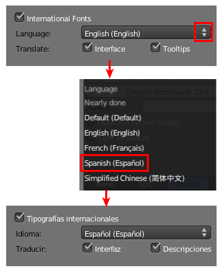
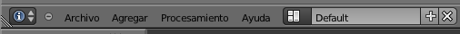

Cambiar el idioma
Una gran novedad de Blender 2.60 fue el surtido de traducciones (muy completas pero no del todo) entre las que se encontraba el español. Es cierto que las versiones de la serie 2.4x ya la incorporaban pero era demasiado precaria e incompleta como para que los creadores de documentación se animaran a hacer contenido con las capturas de pantalla y las secuencias de menús en un idioma que no fuera el inglés.
Si ya tenemos instalado y arrancado Blender, vamos a proceder al cambio de idioma. Es muy importante que esta operación la hagamos sin haber manipulado nada por lo que la interfaz de trabajo está así.
En la parte superior izquierda hay una secuencia de menús como en cualquier otro software donde seguimos la secuencia File/User Preferences que hace aparecer este cuadro en el que nos dirigimos a la sección System y activamos la opción Internatonal Fonts.
Esto hace aparecer una serie de campos:
- Language/Idioma. Las flechas de la derecha despliegan el surtido de idiomas. Como es lógico nos quedamos con Spanish (Español).
- Traslate/Traducir. Hace referencia a qué aspectos queremos que se traduzcan.
- Interface/Interfaz. Se traducen los menús, botones, campos editables...
- Tooltips/Descripciones. Hace referencia a las ayudas de texto que aparecen cuando dejamos el cursor del ratón un tiempo sobre una herramienta, botón...

Activamos las dos opciones y cerramos este cuadro User Preferences, que ahora se llama Preferencias de usuario y seguimos sin manipular nada más (después entenderemos por qué). Este debe ser el aspecto de la parte alta de nuestra interfaz de trabajo.
Avance de la traducción
La traducción al español está muy desarrollada pero siempre queda algún fleco suelto. Es posible que alguna captura en Blender: 3D en la Educación no se corresponda al 100% con el nivel de traducción de la versión de Blender que tengamos instalada, pero en ningún caso será un problema para la comprensión de las explicaciones.
Blender: 3D en la Educación se ha elaborado con la versión de Linux que discrepa en algún término con las otras versiones; pero, nuevamente, eso no supondrá ningún inconveniente en el desarrollo de los contenidos.